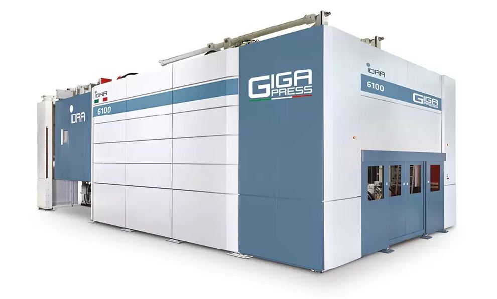
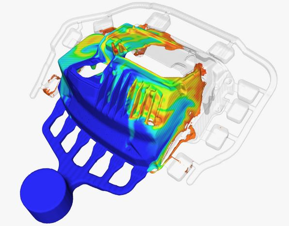
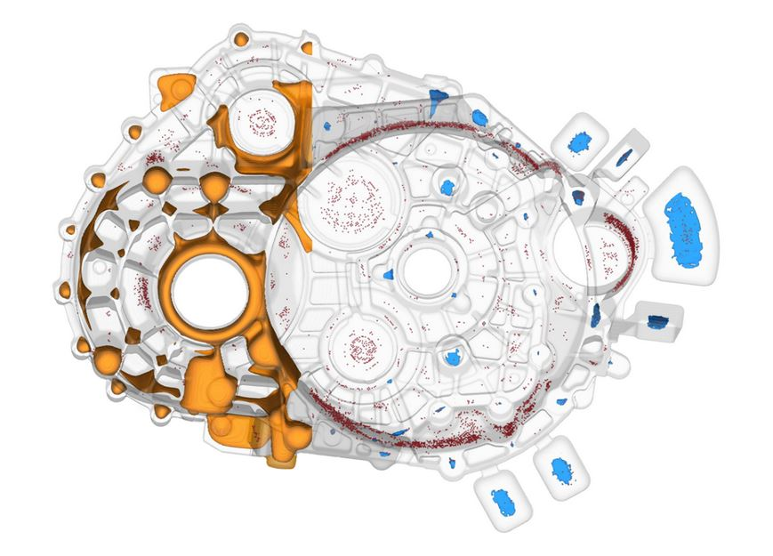

O MNIE
 Jestem absolwentem kierunku Inżynieria Materiałowa na Politechniki Śląskiej. Od 15 lat zajmuję się odlewnictwem ciśnieniowym.
W swojej karierze byłem technologiem, konstruktorem a obecnie, od wielu lat pracuję jako inżynier d.s. symulacji.
Zajmuje się konstrukcją układów wlewowych i obliczeniami CFD. Na codzień wykorzystuję oprogramowanie FLOW-3D. Obecna praca sprawia mi satysfakcję ponieważ od czasu do czasu mogę również stosować w niej zagadnienia związane z programowaniem.
Jestem absolwentem kierunku Inżynieria Materiałowa na Politechniki Śląskiej. Od 15 lat zajmuję się odlewnictwem ciśnieniowym.
W swojej karierze byłem technologiem, konstruktorem a obecnie, od wielu lat pracuję jako inżynier d.s. symulacji.
Zajmuje się konstrukcją układów wlewowych i obliczeniami CFD. Na codzień wykorzystuję oprogramowanie FLOW-3D. Obecna praca sprawia mi satysfakcję ponieważ od czasu do czasu mogę również stosować w niej zagadnienia związane z programowaniem.
HPDC
Odlewanie ciśnieniowe (odlewanie pod wysokim ciśnieniem) – technologia kształtowania ciekłego metalu w gotowy wyrób. Technologia ta umożliwia wytwarzanie wyrobów gotowych, głównie ze stopów metali nieżelaznych (Al, Mg, Zn, Cu). Odlewy ciśnieniowe charakteryzują się dużą dokładnością, stabilnością wymiarową, jakością powierzchni i odwzorowaniem ich kształtów.
Odlewanie ciśnieniowe polega na wymuszonym ruchu metalu wypełniającego wnękę formy, ciśnieniem wywołanym ruchem tłoka prasującego maszyny odlewniczej. Technologia ta zapewnia wysoki uzysk metalu, a dzięki drobnoziarnistej strukturze - dobre właściwości mechaniczne, fizyczne i chemiczne odlewów. Cechą charakterystyczną tej technologii odlewania są bardzo wysokie prędkości i ciśnienia niespotykane w innych technologiach odlewniczych. Prędkości te dochodzą do 100 m/s a ciśnienia do 150 MPa. Oznacza to, że sposób wypełniania wnęki formy przebiega w sposób turbulentny, któremu towarzyszą zjawiska rozpylania, zawirowania, rozbijania i mieszania się strug ciekłego metalu. Konsekwencją takiego sposobu wypełniania wnęki formy są niejednorodności strukturalne odlewów w postaci pęcherzy gazowych, rozdzielenia faz i wtrąceń niemetalicznych.
CFD
Obliczeniowa mechanika płynów, numeryczna mechanika płynów (ang. Computational Fluid Dynamics, CFD) – dział mechaniki płynów wykorzystujący metody numeryczne do rozwiązywania zagadnień przepływu płynów.
Dzięki dyskretyzacji i numerycznemu rozwiązaniu cząstkowych równań różniczkowych opisujących przepływ, możliwe jest przybliżone wyznaczenie rozkładu prędkości, ciśnienia, temperatury i innych parametrów w przepływie. Współczesne programy CFD pozwalają na rozwiązywanie przepływów z uwzględnieniem lepkości i ściśliwości, przepływów wielofazowych, przepływów w których występują reakcje chemiczne lub procesy spalania,
przepływów przez struktury porowate, oraz przepływów w których czynnik jest płynem newtonowskim (niutonowskim) lub nienewtonowskim. Istnieje także możliwość symulowania interakcji płyn-ciało stałe. Większość współczesnych programów CFD bazuje na równaniach Naviera-Stokesa (równanie zachowania masy, pędu i energii dla płynu) i dyskretyzuje je za pomocą metody objętości skończonych, metody elementów skończonych lub metody różnic skończonych.
Kontakt
adam.gieszczyk@gmail.com